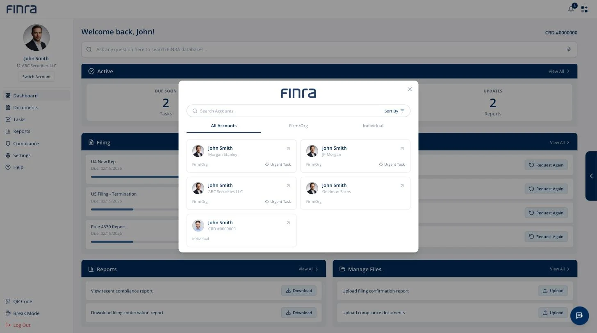
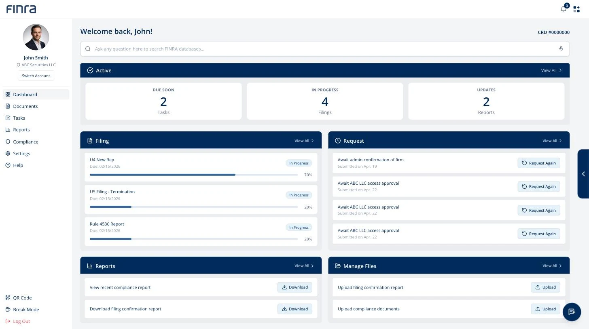
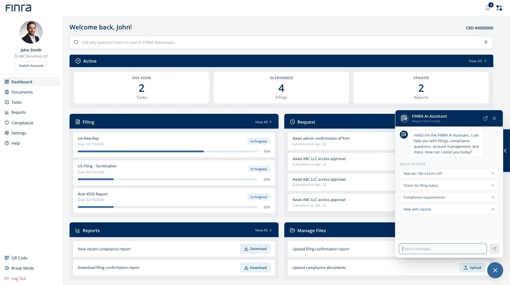

Research
We started with banks, and the answer turned out to be Discord.
A teammate and I ran the comparator study. We began with financial institutions, since that was the obvious place to look, and widened once we understood what we were actually solving. Four sets, each with a question we wanted answered: how high trust organizations help people act in regulated environments (Chase, Rocket Money, Plaid), how one system changes what it shows depending on who signed in (Discord, Microsoft Teams, Notion), how services shape a screen around intent (Netflix, Amazon, Spotify), and how assistants work against private company data instead of the open web (AWS, Dropbox Dash, Notion AI).
Two of them shaped what we built. The first was Discord, which is nowhere near finance and was the most useful thing we looked at. Everyone enters through the same door, and then the sidebar and tools reorganize completely around your role in that particular server. Destructive actions like deleting a channel sit in a separate admin view, so ordinary members never trip over them. Teams and Notion do quieter versions of the same idea.
The second was Plaid, for how it manages access rather than how it looks. Data sharing is explicit, limited, and revocable. Access is token based and scoped to a permission rather than to a person. Trust comes from governance rather than from anything on screen, which is close to a specification for what a FINRA login has to do.
Between them: one front door, everything behind it reshaped by what you are permitted to do, and permissions treated as the structure rather than as a setting.
The Finding
Job titles turned out to be the wrong way to organize the system.
The obvious way to build permissions is around who somebody is. Give a title, get a dashboard. It is how most enterprise software works and it is what we assumed we would be designing.
Our research pointed somewhere else. People do not arrive at a system like this thinking about their title. They arrive with a thing they need to get done, and the same person can need very different things depending on which hat they are wearing that morning. Once we sorted by work rather than by role, the sprawl collapsed into four kinds of task: compliance maintenance, rule interpretation, investment guidance, and data access.
That produced the idea we built everything else on, which we called the lobby. One entry point that reads your entitlements when you authenticate, then assembles the space around what you are allowed and expected to do. You should not have to know which of several systems happens to hold your answer.

The account switcher. One person, several firms, one individual registration, and a flag on whichever ones need attention. Everything runs on invented data.
Testing
Everyone finished every task, which was not a good result.
We tested a mid fidelity prototype with 18 participants aged 18 to 40 across five tasks: log in with a firm account, use the assistant to learn how to complete Form U4, find where to submit it, read notifications, and switch between accounts. A second version with different visual treatment ran alongside it so we could compare. I helped write the tasks and sat in on most of the sessions.
Completion was 100% on every task. Almost nothing else was.
Logging in. No errors at all, and 30% still reported low trust while doing it. The confusion that did show up clustered on one thing: account status and account selection were not obvious.
The assistant. The most friction of any task. 44% hit medium or high confusion, and the cause was discoverability rather than the answers. People could not tell where the assistant began.
Finding the submission portal. Clean on paper, 0% errors. But several people did not recognize text as clickable, so they found it slowly and by accident.
Notifications. The gap between the numbers and reality was widest here. 100% completion, 30% logged errors, and 22% high confusion among people who had just succeeded. They could not tell which account a notification had come from.
Switching accounts. Multiple people said it felt sudden, or disconnected from the rest of the experience. The most common failure across the whole study was feedback: the system doing something without saying so.
A completion rate is the easiest number to report and it would have told us the design was finished. The way our team put it afterwards was that trust drops before usability does, and that account switching failed at feedback rather than at function. Nothing was broken. People just could not tell what had happened. That gap became the thing we designed against for the rest of the project.
Week 7
The client moved the target with a week and a half left.
Our week 7 presentation was meant to confirm the usability improvements. The client took us somewhere else instead. They wanted FINRA.org content pulled into the task workflow rather than sitting next to it, which turned a login redesign into a portal that had to hold together across FinPro, Gateway, and Arbitration.
I was disappointed for about a day. It was substantially more work, and we had roughly a week and a half left. It was also the right call, and we went back to the drawing board with a much clearer sense of what they actually wanted.
What We Changed
Three of the fixes came straight off the testing sheet.
Testing is only worth the time it costs if something moves afterwards. Three things did, and each one points back at a specific finding.
The assistant moved out of the search bar. People could not tell where it began, so it stopped sharing a box with search and became its own control. That was the 44% confusion, addressed at its cause rather than with better copy.
Account switching became a page instead of a panel. People said it felt sudden. A panel slides over the work you were in the middle of. A page is somewhere you go, and when you arrive you can see every profile you hold at once.
Filings and the sidebar got progress bars and status tags. The most common failure in the whole study was feedback, so the system started saying what state things were in instead of leaving people to work it out.
Two more came out of the client's redirect. The assistant now also lives on FINRA.org itself, with a route back into the dashboard, so the public site and the logged in system stop behaving like separate places. And signing in with a username skips account selection altogether and lands you on the dashboard attached to it.
One came from the forum research, where people described losing work to being signed out partway through a filing. The system now asks whether you want to stay.
Building It
A flow can read perfectly on an artboard and still fall apart.
Most of what our team designed only became real once someone built it. That was mostly me, working with two others, turning the Figma screens into something you could actually sign into and move through.

The dashboard groups work by state rather than by which system it came from.
That included the account switcher, which other people on the team designed and I implemented. It is the piece I would point at first, because it answers the research directly. One person, several firms, one individual registration, and a system that tells you which of those you are currently acting inside. The assistant went in the same way, scoped to filings, compliance and reports rather than being a general chatbot.

The assistant opens on the things people actually come here to do, rather than an empty box.
The login flow is where the gap showed up. It made sense on the artboards. Coded, clickable, and carrying real state between steps, it did not hold, and the client did not like our first couple of iterations either. We rebuilt it more than once.
That is most of what I took from this project. A flow can read perfectly as a sequence of screens and still fall apart the moment someone can move through it at their own pace, in the wrong order, with a decision already made two steps back. I would rather find that out in a prototype than in a handoff.
How It Landed
They told us they planned to implement it.
We presented in week 10. The client told us they liked it and that they were planning to implement the changes. I do not know whether they have.
The most useful part of their feedback was not the praise. The trust gap we had found around the AI, where it plainly made things easier and people still hesitated to lean on it, was the part they engaged with most closely. Having a finding land with people who know the domain far better than you do is a different kind of confirmation than a good testing score.
They pushed back too. They were worried the assistant would end up covering the content it was meant to help with, and they asked how we would keep features from duplicating each other as the system grew. Both are fair, and both are the kind of question you only get from someone who has to live with the thing after you leave.
What I'd Do Differently
I would have asked the embarrassing questions in week one.
None of us had worked in this industry, and the vocabulary alone took weeks to get comfortable with. That was the biggest drag on the project and it was the most fixable. I would spend the first week asking basic questions I was slightly embarrassed to ask, instead of picking it up as I went.
Beyond that, I am proud of how the team worked and of what we handed over.
Try It
The prototype is live. Sign in with anything.
This is the working build, not a video of one. Any email and password get you in, the two factor code accepts any four digits, and everything after that is the design we handed over. The account switcher is the piece I would look at first: it is the research from the top of this page turned into a screen.
It runs on invented data. The firms, filings and people in it are made up.